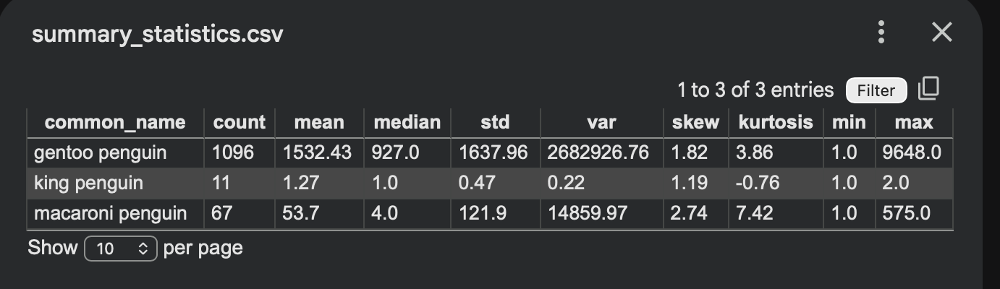
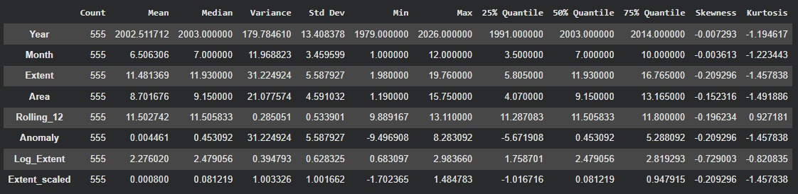
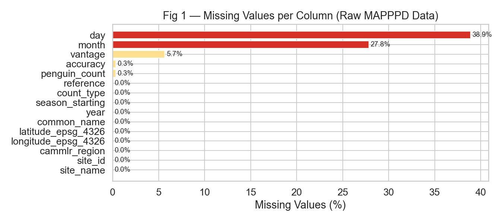
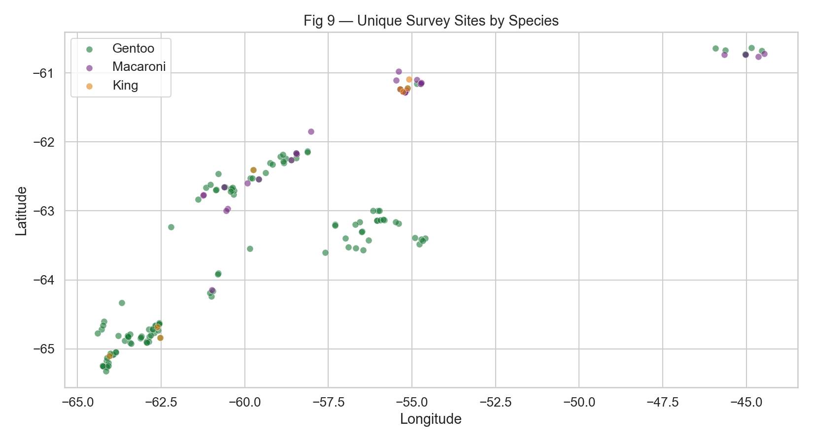
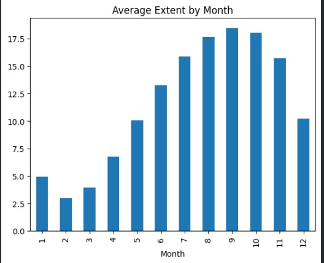
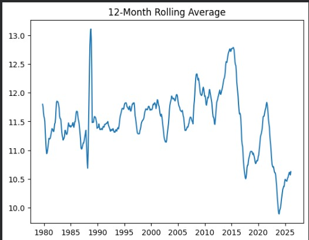
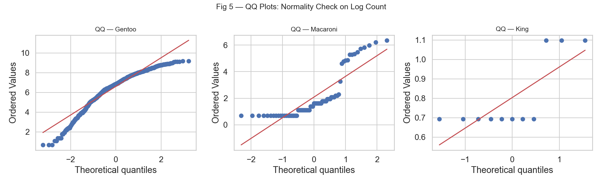
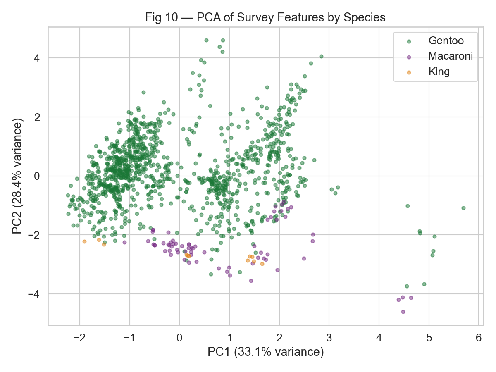
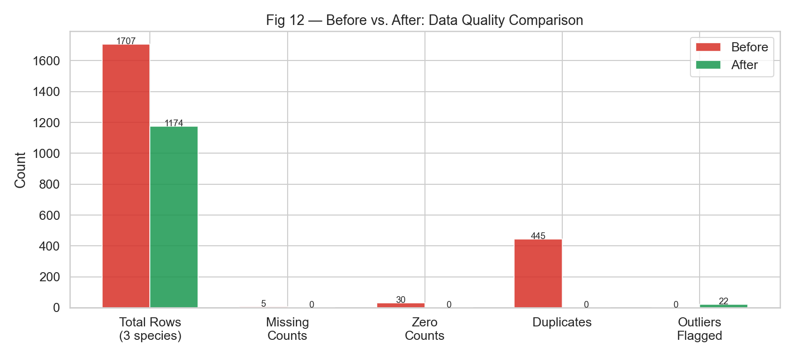

1. Data Collection
Source & Method
Population census records for Gentoo, King, and Macaroni penguins were sourced from MAPPPD (penguinmap.com), the world's only open-access Antarctic penguin database. Data was downloaded directly via the MAPPPD portal and loaded dynamically using a Python caching function that re-fetches from the live source when needed.
Antarctic Sea Ice Extent (Static) was sourced from the National Snow and Ice Data Center (NSIDC), NASA. The data is available at NSIDC Antarctic Sea Ice Monthly Data.Data was directly downloaded as CSV files containing monthly sea ice area measurements from 1979 to 2025.
Why This Source?
[ Justify why this dataset is authoritative and relevant to the research questions. If a static download was used instead of a live API, explain why a live source was not feasible. ]
NSIDC provides authoritative, well-maintained Antarctic sea ice datasets collected via satellite observations. This dataset is relevant to our research as it provides long-term temporal coverage (1979–2025) and high spatial resolution, enabling robust analysis of trends and variability in Antarctic sea ice extent.
Dataset Overview
2. Cleaning & Preprocessing
Missing Values
65 pre-1979 records were removed as MAPPPD systematic coverage only begins then, along with 2 missing counts, 28 zero-count entries, and 438 duplicate site-year records. Outlier detection using 3×IQR flagged 9 Gentoo and 13 Macaroni surveys as extreme values without removing them, preserving data integrity.
The data cleaning impact chart above summarizes the preprocessing results. The dataset initially contained missing values which were removed during cleaning, resulting in a complete dataset with no remaining null entries. Duplicate records were also checked, and no significant duplicates remained after validation.
Duplicates & Inconsistencies
Standardize text fields (common_name, count_type, site_name, etc.) by removing whitespace and converting to lowercase to ensure that the same category is not treated as different. Eliminated duplicate rows using a reasonable key (site, species, date, count_type, vantage, penguin_count, etc.) to ensure that aggregated results are not skewed by duplicate counts.
Duplicate detection was performed using the core time variables (Year and Month) along with the measurement fields. As shown in the cleaning impact chart, the dataset contains only unique records after preprocessing, ensuring consistency for analysis.
Outlier Detection
Removed invalid counts where penguin_count < 0. Flagged extreme values during EDA using boxplots and log transformation. (We did not blindly remove high values because large colonies can be legitimate; instead we inspected them via site-wise summaries.)
Outliers were examined using distribution analysis. The histogram compares the sea ice extent distribution before and after cleaning. Since the distributions appear nearly identical, the cleaning process preserved the underlying data patterns while removing inconsistencies.
Transformations Applied
Added log_count = log(1 + penguin_count) to reduce skew and make distributions/relationships easier to visualize and model.
3. Statistical Analysis
Summary Statistics
Gentoo dominates with 1,096 records and a mean count of 1,532 per survey, while King penguin has only 11 records — a significant imbalance worth noting. A Kruskal-Wallis test confirms the three species differ significantly in count distributions (H=187.66, p<0.0001), and annual totals show King and Macaroni are strongly correlated (r=0.918) while Gentoo behaves independently.

The cleaned dataset contains 2,494 records across three species (Adélie 1,330, Chinstrap 1,073, Emperor 91). For all species, the mean is much higher than the median, showing a strong right-skew due to a few very large colony counts (max up to 504,332). Data is mostly complete; only day has notable missingness (22.5%) and vantage has minor missingness (4.6%).

The Antarctic sea ice dataset contains 555 observations, with average Extent ≈ 11.48 million km² and Area ≈ 8.70 million km², showing moderate variability but relatively symmetric distributions (skewness near 0). The engineered features (Rolling_12, Log_Extent, and scaled values) stabilize variance and highlight longer-term trends and anomalies in sea ice extent over time.

Correlation Analysis
Annual totals reveal a strong positive correlation between King and Macaroni penguins (r=0.918), suggesting they may respond similarly to environmental changes. In contrast, Gentoo penguins show no significant correlation with either species, indicating distinct population dynamics.
4. Visualizations

Insight: Day and month columns had the highest missingness (38.9% and 27.8% respectively); month was imputed using breeding season norms by count type, while day was left as-is since it is not used in the analysis.

Insight: Survey sites are heavily concentrated in the sub-Antarctic islands (South Georgia, Falklands, Kerguelen) with Gentoo covering the widest geographic spread, while King and Macaroni sites cluster in a narrower latitudinal band.

[ Insight: Shows seasonal and interannual variability, with general trends in ice extent. Peaks in austral winter, troughs in summer, highlighting long-term patterns and variability.

[ Insight: The 12-month rolling average shows long-term variability in Antarctic sea ice extent, with relatively stable levels until the mid-2010s followed by a noticeable decline after 2016. Recent years show partial recovery but values remain lower than earlier historical peaks. ]

Insight: QQ plots assess normality of log-count. Note deviations at tails
[ Insight: which count types dominate and any data gaps. ]
[ Insight: which species co-vary and possible ecological reasons. ]
[ Insight: long-term signal vs year-to-year noise. ]
[ Insight: geographic coverage and species overlap. ]

[ Insight: how well species cluster in reduced feature space. ]
[ Insight: volatility, crash years, and recovery periods. ]
Additional visualizations can be inserted above as the analysis matures.
5. Before / After Data Quality

![[ Fig 12 — Before vs After grouped bar chart ]](Sea_Ice_b4_After.jpeg)
![[ Fig 12 — Before vs After grouped bar chart ]](Sea_Ice_extent_Before.jpeg)
The raw 3-species dataset contained 1,707 rows with duplicates, zero counts, and pre-systematic-coverage records; after cleaning, 1,174 high-quality records remain with imputed months, flagged outliers, and derived features including log count, decade, and normalized scores.
Dataset Snapshot — Before Cleaning
BEFORE| common_name | year | site_name | penguin_count | count_type | vantage |
|---|---|---|---|---|---|
| [ Paste or screenshot raw rows here ] | |||||
Dataset Snapshot — After Cleaning
AFTER| common_name | year | site_name | penguin_count | log_count | count_zscore | is_outlier |
|---|---|---|---|---|---|---|
| [ Paste or screenshot cleaned rows here ] | ||||||
6. Ethics, Bias & Limitations
Geographic Bias
Survey sites in the MAPPPD dataset are heavily concentrated around established research stations and accessible sub-Antarctic islands such as South Georgia, Kerguelen, and the Falklands — Gentoo's 1,096 records reflect this bias, while King penguin's 11 records highlight how remoter breeding sites remain largely unmonitored. This uneven coverage means population trends may better represent well-studied colonies than the species as a whole.
Temporal Coverage Gaps
King penguin is severely underrepresented with only 11 clean records across the 1979–2025 window, making any trend interpretation for that species unreliable. Macaroni penguin coverage also thins considerably before the 1990s, which may distort long-term decline estimates if early baseline counts are missing.
Measurement Uncertainty
MAPPPD's accuracy field (scale 1–5) was retained in the dataset but not used to filter records, meaning lower-confidence estimates from satellite or aerial surveys are weighted equally alongside precise ground counts. Future analysis should consider filtering to accuracy ≥ 3 or weighting records by accuracy to reduce noise in trend modeling.
Species Scope
This analysis covers only Gentoo, King, and Macaroni penguins, leaving out Adélie, Chinstrap, and Emperor species that are also present in the MAPPPD dataset and ecologically significant. Conclusions about Antarctic penguin population health cannot be generalised beyond these three species without expanding the dataset.
Ethical Considerations
Data is sourced from the Antarctic Penguin Biogeography Project (APBP) and distributed through MAPPPD under a CC-BY 4.0 open-access license, requiring attribution to Che-Castaldo, Humphries, and Lynch. This data directly informs CCAMLR conservation policy and krill fishing regulations, so responsible use means avoiding overstatement of trends given known data gaps, and ensuring any published findings credit the original field researchers whose decades of survey work underpin the dataset.